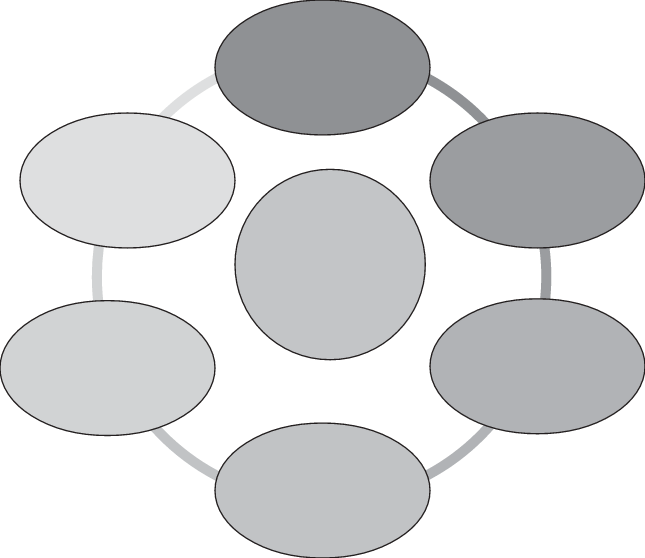

5. Considerações sobre avaliação
A avaliação desempenha um papel crucial para o acompanhamento contínuo do ensino, possibilitando seu aprimoramento.
Ela fornece informações valiosas sobre o desempenho pedagógico e o progresso dos estudantes.

Por que avaliar?
Diagnosticar os conhecimentos dos estudantes
Planejar e adequar atividades
Contribuir com a autoavaliação docente
Replanejar o processo
Verificar os resultados do processo
Acompanhar o desenvolvimento dos estudantes
A ação de avaliar consiste em coletar informações para que o professor possa auxiliar cada indivíduo de maneira personalizada, a fim de que alcance os objetivos educacionais propostos.
Trata-se, portanto, de um instrumento fundamental no processo de ensino e aprendizagem.
Muitos são os teóricos que discutem o tema.
Nossa coleção se apoia em teorias que concebem a avaliação como um processo contínuo, permitindo ao estudante acompanhar seu processo de aprendizagem e, ao professor, refletir sobre o seu trabalho, aperfeiçoando-o.
Jussara Hoffmann, importante pesquisadora na área, apresenta mais esclarecimentos sobre a avaliação contínua:
[...] O processo avaliativo se desenvolve concomitante ao desenvolvimento das aprendizagens dos alunos.
Anotações sobre o seu desempenho bimestral, por exemplo, são pequenas “paradas” de um trem em movimento, ou seja, momentos de o professor dar notícias sobre o caminho percorrido pelo aluno até aquele momento (Hoffmann, 2005, p. 15).